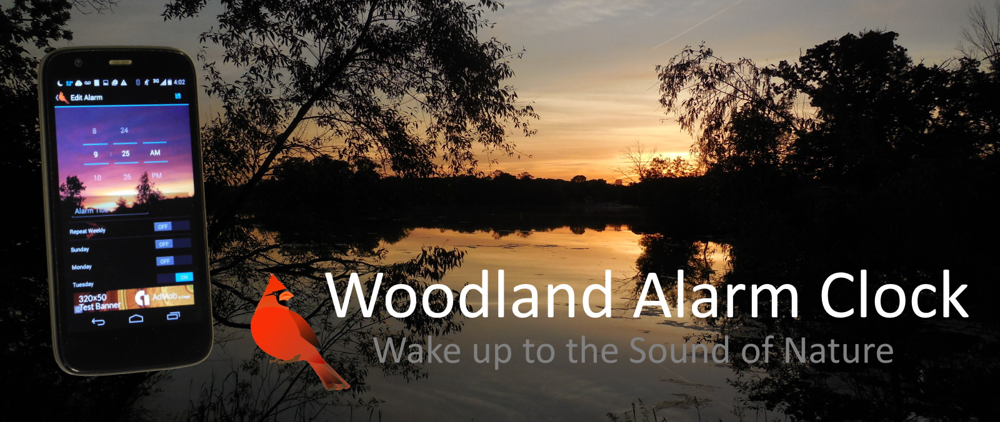
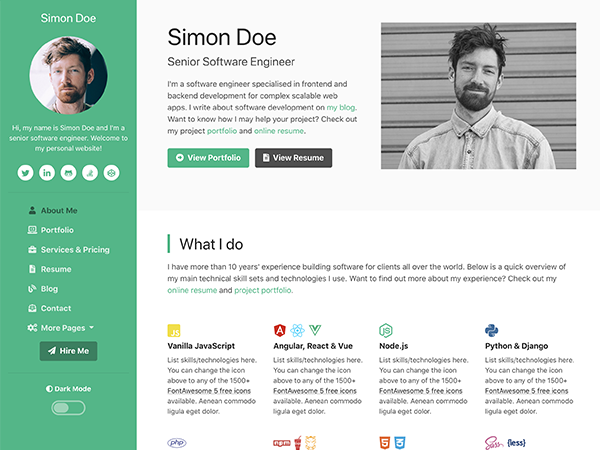

I am an independent Android Developer with over five years of experience writing Android apps. I have a passion for using code to solve real-world business problems. I enjoy learning how other people have recognized and solved problems, so that I can use what I learned from them to solve my own problems. I'm always seek to learn something new. I have turned my passion for nature into a self-sustaining Android App business.
About Me
Latest Projects

Free
Woodland Alarm Clock - Wake Up to the Sound of Nature
Woodland Alarm Clock is a nature-themed alarm clock app for Android. Bird songs start almost silently, then fade in over time to wake you gently but reliably to a relaxing dawn chorus. At the same time, a forest scene starts dark then brightens, simulating the rising sun. In developing this app, I learned what it takes to run a successful app from a design, engineering, and business perspective.

Core Logic, Design
Woodland Alarm uses the AlarmManager API to bring the alarm activity to the foreground at the required time. The alarm service starts in response to broadcasts of application updates, phone restarts, and time changes, to ensure continuous operation. Upon starting the alarm service, the database which stores the alarms is queried, and the response populates alarm models, which set the AlarmManager, and are used for displaying data to users.

Testing, Reliability, Quality Assurance
Thorough testing of every feature allowed my app to achieve a crash rate and ANR rate far below my competitors. Testing is a combination of unit testing, manual testing on several devices, and stability data provided through the Google Play Developer Console. Early warning systems notify me immediately of problems in production.

Analytics, Business Decision Making
I listen to my customers, and deliver them a quality experience. Woodland Alarm has a 4.3 Google Play Store rating due to prompt, genuine replies to customer feedback. A/B Testing and Analytics show me what features customers prefer and use most often.

Web Connectivity
Woodland Alarm Clock is supported by a backend running at https://casualwoodsman.com, which delivers files to the app, and provides a web presence for my business outside the Google Play Store.

Secure Sign-in - NEW
Users can securely sign in with their Facebook or Google accounts using an OAuth token. Each user has their data anonymously saved in a Google Cloud Firestore database.
Other Projects
Carry-factor.com - Match Analysis Tool for League of Legends
Full-stack gaming statistics website. A client's request would be processed by my server, which would send a request to the game developer's API, and the response would be processed to generate the website UI in the client's browser.
JS Bach, Beethoven, Mozart, and Star Spangled Alarm Clocks Free
Classical music themed alarm clocks similar to Woodland Alarm. A common Java library allows code reuse, so that new alarm apps could be rapidly duplicated to test the market viability of different themes for alarm clocks.
Outdoorsman's Waypoint Plotter
A simple, easy to use map plotting app using the Google Maps API, with Voice-to-Text implemented to allow hands-free operation. A range and bearing indicator lets users easily orient themselves to their surroundings. Designed to help users navigate through large wooded public parks.
LeetCode
Check out my skills on LeetCode! Over 80 problems solved in Kotlin. Demonstration of my knowledge of data structures and algorithms, as well as what my code looks like.
Work Experience
Independent Android Developer - Self-Employed (2015 - Present)
For the past five years, I've been on my own, learning how to develop software while pursuing entrepreneurial business ideas. During this time, I've built a self-sustaining app business, while sharpening my coding skills. I know what it takes to get an app up and running, as well as how to manage it from a business perspective.
Machine Vision Application Engineer - Datalogic Automation (2011 - 2013)
Supported sales operations of machine vision inspection systems in industrial automation. Worked with proprietary software to help design concepts for customers, assisted in installation, and trained customers in the machine vision software.
Intelligence Analyst - Minnesota Army National Guard (2002 - 2011)
Provided intelligence summary reports which were used in the defense of Balad Airbase. Gave daily debriefings to commanders and staff on current intelligence reports.
My GitHub
You can embed your GitHub contribution graph calendar using IonicaBizau's GitHub Calendar widget. Loading data just for you.
Loading data just for you.
You can also embed your GitHub activities using Casey Scarborough's GitHub Activity Stream widget.